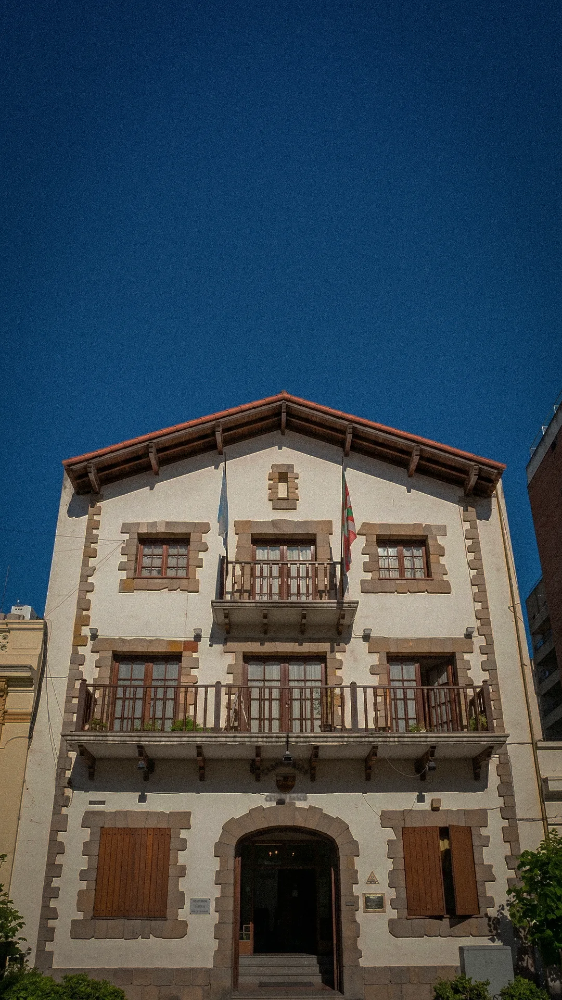
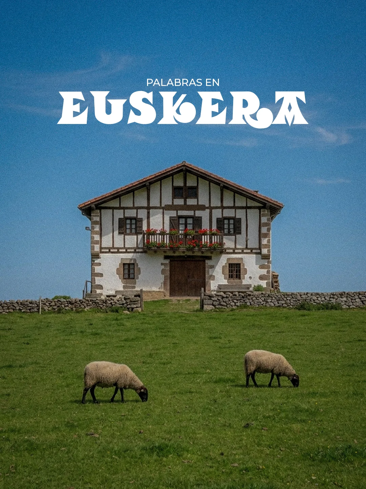
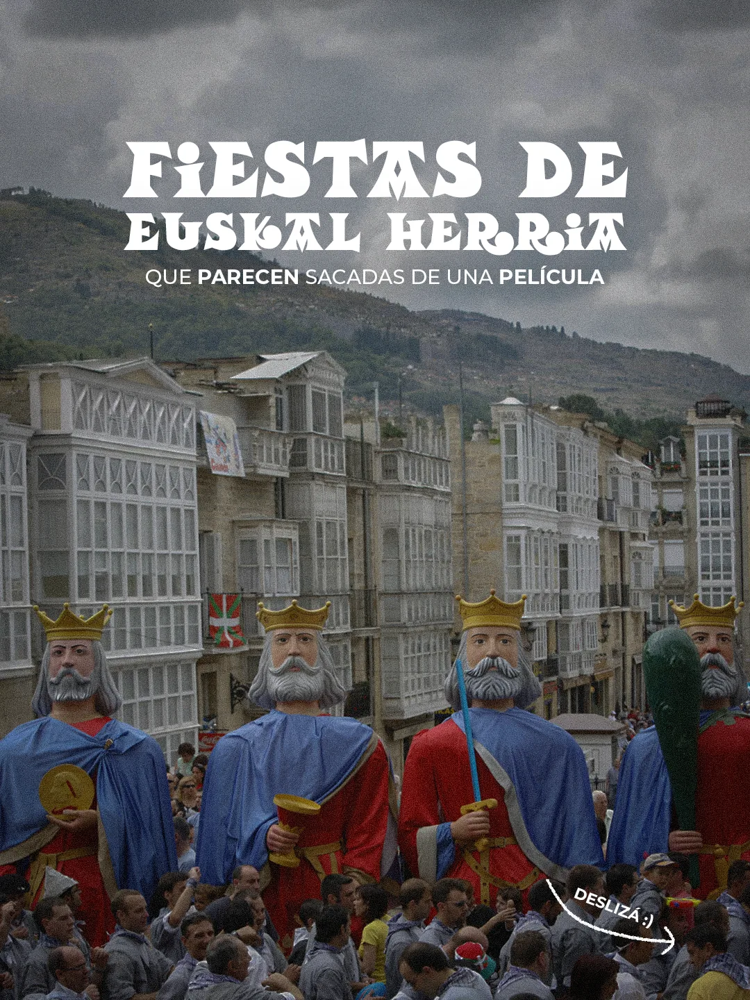

Euskera: el idioma que conecta con nuestra comunidad
- 47.684 reproducciones
- 28.770 cuentas alcanzadas
- 474 guardados
- 309 envíos
JULEN
CALBOECHENE
Diseño gráfico · Community management · Edición de video
0%
Diseño gráfico · Community management · Contenido para redes
Diseño marcas, creo contenido y construyo comunidades.
01 — Trabajo
Proyectos organizados por carpeta. Tanto las piezas gráficas como los recursos visuales fueron creados, editados y retocados por mí.
Todavía no hay proyectos cargados.
02 — Community
La cuenta que más creció bajo mi gestión: contenido y estrategia de punta a punta.

Community management
Durante cuatro meses de gestión, convertí al Centro Vasco en la institución vasca con mayor comunidad en Instagram de Argentina, logrando un crecimiento orgánico sostenido. Desarrollé una estrategia centrada en contenido informativo y de valor, sin depender de tendencias, que permitió fortalecer la comunidad y transformar el crecimiento digital en resultados concretos, aumentando la asistencia a eventos y la venta de entradas a través de Instagram.
Posteos que funcionaron


03 — Reel
Videos para redes: ritmo, subtítulos y ganchos pensados para retener scroll.
Siguiente paso
Contame tu idea y trabajemos juntos para hacerla realidad. Te respondo con una propuesta concreta.
04 — Sobre mí
Soy Julen Calboechene, diseñador gráfico y content manager. Trabajo en la intersección entre identidad visual y redes sociales: piezas gráficas, gestión de cuentas y edición de video pensadas para cómo se consume contenido hoy — rápido, visual, sin perder coherencia de marca.
Cada proyecto arranca por entender la marca antes que el formato: qué tiene que decir y a quién le habla.
05 — Contacto
La vía más rápida es WhatsApp. También podés escribirme por mail o mandarme un DM.